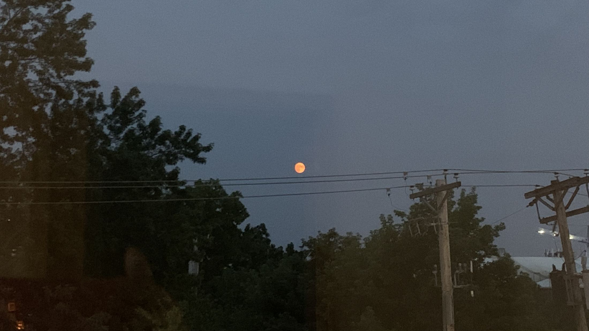
Synthetic Polymer Nanomaterials Laboratory
Department of Chemistry, Inha University
Precision synthesis to control intra- and interchain interactions in polymers.
About
We aim to design the structure and function of materials through precise, molecular-level polymer synthesis.
Using controlled polymerization, we build well-defined polymer architectures and tune their chain structure to control material properties. We then give these polymers diverse functions, from optical to energy-related, to develop new functional polymer nanomaterials.
By linking synthesis, structure, and function, including nanoscale structural control through self-assembly and crystallization, we explore design principles for next-generation energy, environmental, and optical materials.
Research keywords
- Polymer synthesis
- Polymer self-assembly
- Polymeric nanoparticles
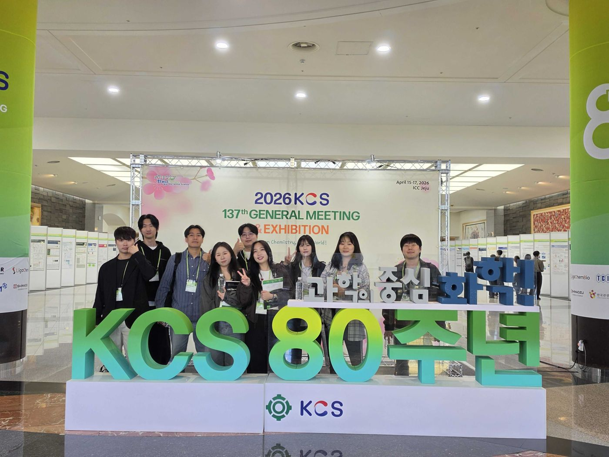
Members
Principal Investigator
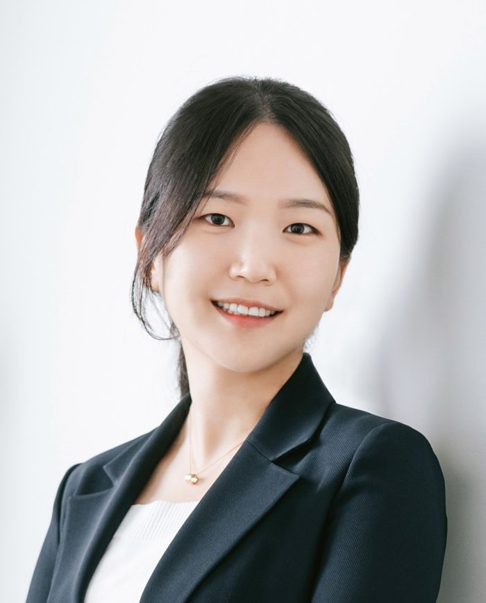
Sanghee Yang 양상희
Assistant Professor, Department of Chemistry, Inha University
- Office
- 5N406, 100 Inha-ro
- Lab
- 5E410D, 100 Inha-ro
- Phone
- +82-32-860-7682
- shyang@inha.ac.kr
Professional career
- 2023.03 – PresentAssistant ProfessorDepartment of Chemistry, Inha University, South Korea
- 2021.03 – 2023.02Postdoctoral ResearcherDepartment of Chemistry, University of Minnesota, USA · Advisor: Prof. Timothy P. Lodge
- 2020.09 – 2021.03Postdoctoral FellowDepartment of Chemistry, Seoul National University, South Korea · Advisor: Prof. Tae-Lim Choi
Education
- 2014.03 – 2020.08Ph.D. in ChemistrySeoul National University, South Korea · Advisor: Prof. Tae-Lim Choi
- 2010.03 – 2014.02B.S. in ChemistrySeoul National University, South Korea
Graduate Students
이름을 누르면 사진이 보입니다.
| Name | Position | Since | |
|---|---|---|---|
| Integrated M.S.–Ph.D. | 2024.09 | g.hwang@inha.edu | |
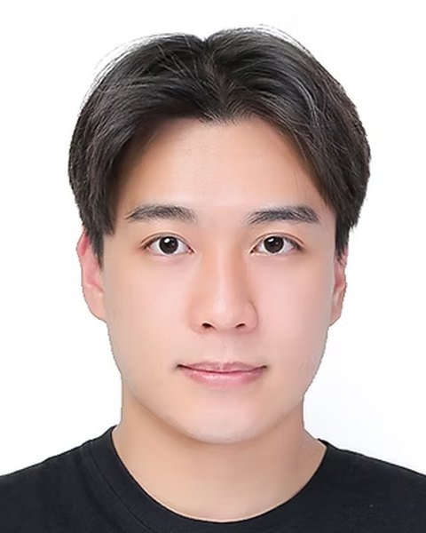 | |||
| M.S. Candidate | 2025.03 | kgw13080@inha.edu | |
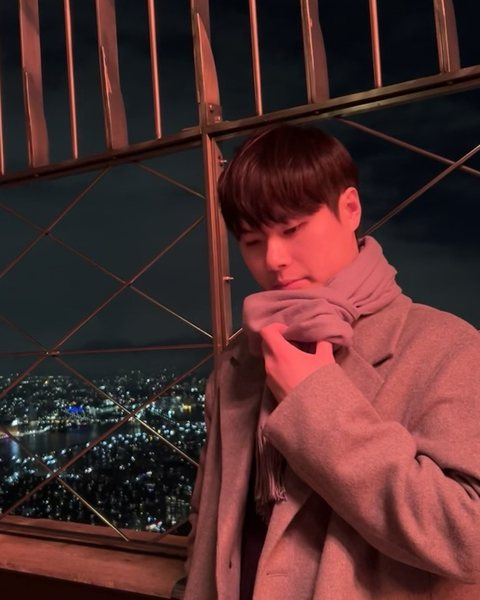 | |||
| M.S. Candidate | 2025.03 | njh@inha.edu | |
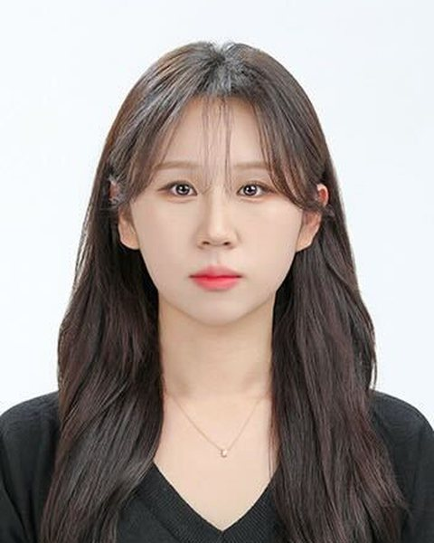 | |||
| M.S. Candidate | 2025.03 | benatto8317@inha.edu | |
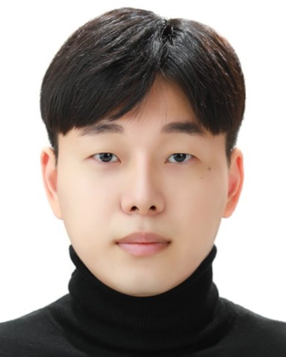 | |||
| M.S. Candidate | 2025.03 | ungwa@inha.edu | |
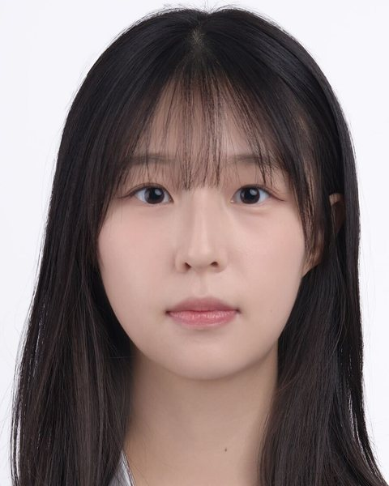 | |||
| M.S. Candidate | 2026.03 | kyseo@inha.edu | |
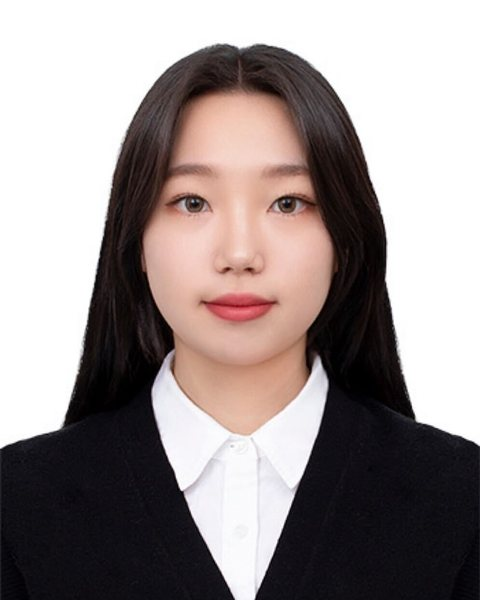 | |||
| M.S. Candidate | 2026.03 | dlwhdsud3232@inha.edu | |
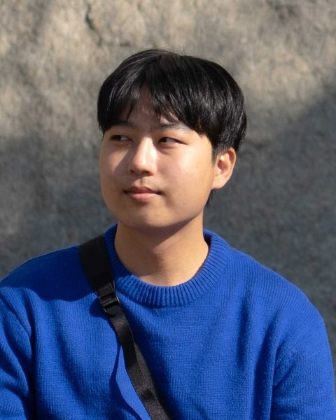 | |||
| M.S. Candidate | 2026.03 | ukim0410@inha.edu | |
Undergraduate Researchers
| Name | Position | M.S. Entry | |
|---|---|---|---|
| Undergraduate Researcher | 2027.03 | chmyun@inha.edu | |
| Undergraduate Researcher | 2027.03 | bjw9371@inha.edu | |
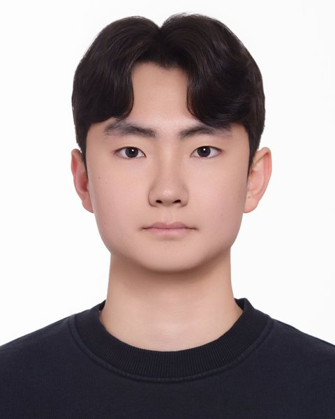 | |||
| Undergraduate Researcher | 2027.09 | ymym1043@inha.edu | |
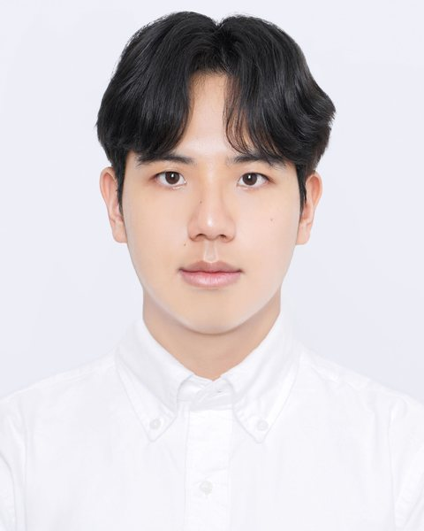 | |||
Alumni
- Thesis
- Substituent-directed polymer chain interactions govern fluorescence mechanisms in non-conjugated polynorbornene derivatives
- Current
- OLAS.CO.,LTD.
Publications
* corresponding author; §, †, & equal contribution
Independent Career at SPNL (2023–)
2026
- 012
Molecular Weight Dependent Fluorescence in Non-Conjugated Polynorbornene: Decoupling Single-Chain Entanglements and Aggregation Effects
Han, S.§; Shin, W.§; Lee, J.; Hwang, G.; Byun, J.; Lee, S.*; Kim, J.*; Yang, S.*
Macromolecules 2026, 59 (12), Just Accepted.
- 011
Quantitative Defect Engineering Governs Crystallization Pathways in Polymer Crystals
Hwang, G.§; Lee, J.§; Ko, G.; Lee, S.*; Yang, S.*
Macromolecules 2026, 59 (12), 6750–6758.
- 010
Control of Lattice Strain in α-FAPbI3
Hong, Y.-K.; Hwang, G.; Ju, S.-Y.; Cachafeiro, M.; Tress, W.; Yang, S.*; Kim, H.-S.*
Small Struct. 2026, 7, e202500664.
2025
- 009
Quantized Fusion Kinetics in Block Copolymer Micelles
Sattari, A.; Yang, S.; Lodge, T.*
ACS Macro Lett. 2025, 14 (4), 391–395.
- 008
Kim, M. S.; Lee, C. Y.; Park, D. H.; Lee, J. E.; Cho, K. G.*; Yang, S.*; Lee, K. H.*
Chem. Eng. J. 2025, 504, 158573.
2024
- 007
Fragmentation Kinetics of Block Copolymer Micelles: Effect of Core and Corona Block Lengths
Yang, S.; Sattari, A.; Han, D.; Lodge, T.*
Macromolecules 2024, 57, 8298–8305.
- 006
Park, S.&; Kang, S.-Y.&; Yang, S.*; Choi, T.-L.*
J. Am. Chem. Soc. 2024, 146 (28), 19369–19376.
- 005
Lee, J.; Shin, E. Y.; Jeon, S.; Yang, S.*; Park, S.*
Top. Catal. 2024, 67, 1077–1084.
- 004
Greenhouse Sulfur Hexafluoride Gas Capture and Separation by Emerging Porous Solids
Jo, E.†; Yang, S.†; Kim, D. W.*; Kang, D. W.*
Coord. Chem. Rev. 2024, 515, 215958.
- 003
Kim, J.§; Kim, S.§; Choi, S. K.; Yang, S.*; Kim, M.*
ACS Appl. Polym. Mater. 2024, 6, 6689–6696.
- 002
Effect of UV-Ozone Treatment for KCl Interlayer in Perovskite Solar Cells
Jo, N.-Y.; Hong, Y.-K.; Yang, S.*; Kim, H.-S.*
Bull. Korean Chem. Soc. 2024, 1–6.
2023
- 001
Yun, N.; Kang, C.; Yang, S.; Hwang, S.-H.; Park, J.-M.; Choi, T.-L.*
J. Am. Chem. Soc. 2023, 145 (16), 9029–9038.
2022
- 015
Dynamics and Equilibration Mechanisms in Block Copolymer Particles
Lodge, T.*; Seitzinger, C.; Seeger, S.; Yang, S.; Gupta, S.; Dorfman, K.
ACS Polym. Au 2022, 2 (6), 397–416.
- 014
Conformation Dynamics of Single Polymer Strands in Solution
Bae, Y.†; Ha, M. Y.†; Bang, K.-T.†; Yang, S.; Kang, S. Y.; Kim, J.; Sung, J.; Kang, S.; Kang, D.; Lee, W. B.*; Choi, T.-L.*; Park, J.*
Adv. Mater. 2022, 34, 2202353.
- 013
Choi, I.; Kang, S.-Y.; Yang, S.; Yun, N.; Choi, T.-L.*
Macromolecules 2022, 55 (9), 3484–3492.
- 012
Hwang, S.-H.†; Kang, S.-Y.†; Yang, S.; Lee, J.; Choi, T.-L.*
J. Am. Chem. Soc. 2022, 144 (13), 5921–5929.
2021
- 011
Yang, S.; Kang, S.-Y.; Choi, T.-L.*
Nat. Commun. 2021, 12, 2602.
- 010
Peterson, G. I.; Noh, J.; Ha, M. Y.; Yang, S.; Lee, W. B.*; Choi, T.-L.*
Macromolecules 2021, 54, 4219–4226.
- 009
Direct Formation of Nano-Objects via In Situ Self-Assembly of Conjugated Polymers
Peterson, G. I.; Yang, S.; Choi, T.-L.*
Polym. Chem. 2021, 12, 1393–1403.
2020
- 008
Yang, S.; Choi, T.-L.*
Chem. Sci. 2020, 11, 8416–8424.
Selected as a Chem Sci Pick; 2020 Chemical Science HOT Article Collection
2019
- 007
Yang, S.; Kang, S.-Y.; Choi, T.-L.*
J. Am. Chem. Soc. 2019, 141 (48), 19138–19143.
- 006
Dutertre, F.; Bang, K.-T.; Vereroudakis, E.; Loppinet, B.; Yang, S.; Kang, S.-Y.; Fytas, G.; Choi, T.-L.*
Macromolecules 2019, 52, 3342–3350.
- 005
Peterson, G. I.; Yang, S.; Choi, T.-L.*
Acc. Chem. Res. 2019, 52 (4), 994–1005.
2017
- 004
Yang, S.; Shin, S.; Choi, I.; Lee, J.; Choi, T.-L.*
J. Am. Chem. Soc. 2017, 139 (8), 3082–3088.
- 003
Kang, E.-H.; Yang, S.; Yu, S. Y.; Kim, J.; Choi, T.-L.*
J. Polym. Sci. Part A: Polym. Chem. 2017, 55, 3058–3066.
2016
- 002
Kang, E.-H.; Kang, C.; Yang, S.; Oks, E.; Choi, T.-L.*
Macromolecules 2016, 49, 6240–6250.
- 001
Lim, J.; Cho, Y.; Kang, E.-H.; Yang, S.; Pyun, J.; Choi, T.-L.*; Char, K.*
Chem. Commun. 2016, 52, 2485–2488.
News
Award황규성(석박통합 5차) 학생이 2026 IUPAC-PSK50 학회에서 연구 포스터 발표를 수행하고, 최우수 발표상을 수상하였습니다. 축하합니다~
Paper한세원(26.08 석사졸업)과 황규성(석박통합 5차), 변주원(학부연구생)의 “Molecular Weight Dependent Fluorescence in Non-Conjugated Polynorbornene: Decoupling Single-Chain Entanglements and Aggregation Effects” 논문이 Macromolecules에 게재되었습니다. 축하합니다~
Grant임승욱 학생이 2026년도 이공분야 학술연구지원사업(석사과정생 연구장려금지원)에 선정되었습니다(지원 기간: 2026.09–2027.08). 축하합니다~
Paper황규성(석사 4차)와 고건우(석사 3차) 학생의 “Quantitative Defect Engineering Governs Crystallization Pathways in Polymer Crystals” 논문이 Macromolecules에 게재되었습니다. 축하합니다~
Event이정화(석사 3차), 송주현(석사 3차), 고건우(석사 3차) 학생이 2026 춘계 대한화학회에서 처음으로 연구 포스터 발표를 수행했습니다. 수고했습니다~
Event한세원(석사 4차) 학생이 2026 춘계 고분자학회에서 처음으로 연구 포스터 발표를 수행했습니다. 수고했습니다~
Award우리 연구실이 과학기술정보통신부 선정 제2025-3회 안전관리 우수연구실로 선정되었습니다~ 모두들 고생 많았습니다~
Award이정후, 임승욱 학부연구생이 인하대학교 자연과학대학 화학과에서 주최한 ‘졸업 논문 포스터 발표회’에서 포스터 발표를 수행했습니다. 임승욱 학생은 ‘우수상’을 받았습니다. 축하합니다 ♥
Event황규성(석사 3차), 나지환(석사 2차) 학생이 2025 추계 대한화학회에서 처음으로 연구 포스터 발표를 수행했습니다. 수고했습니다~
Grant나지환 학생이 2025년도 이공분야 학술연구지원사업(석사과정생 연구장려금지원)에 선정되었습니다(지원 기간: 2025.09–2026.08). 축하합니다~
Award김윤서 학부연구생이 인하대학교 자연과학대학 화학과에서 주최한 ‘졸업 논문 포스터 발표회’에서 포스터 발표를 수행했습니다. 김윤서 학생은 ‘우수상’을 받았습니다. 축하합니다 ♥
Award나지환, 송주현, 이정화 학부연구생이 인하대학교 자연과학대학 화학과에서 주최한 ‘졸업 논문 포스터 발표회’에서 포스터 발표를 수행했습니다. 나지환 학생은 ‘우수상’을 받았습니다. 축하합니다 ♥
EventSPNL 실험실에서 첫 하계학부연구생 프로그램을 시작합니다.
Award한세원 학부연구생이 인하대학교 자연과학대학 화학과에서 주최한 ‘졸업 논문 포스터 발표회’에서 포스터 발표를 수행했습니다. 한세원 학생은 ‘최우수상’을 받았습니다. 축하합니다 ♥
EventSPNL 실험실에서 첫 동계학부연구생 프로그램을 시작합니다.
EventSPNL 실험실의 후드 및 실험대 공사와 학생 오피스의 가구 설치가 완료되었습니다.
EventSPNL 보금자리가 인하대학교 5호관 5E410D로 정해졌습니다.
Gallery
Contact
Department of Chemistry, Inha University
100 Inha-ro, Michuhol-gu, Incheon 22212, Republic of Korea
인천광역시 미추홀구 인하로 100, 인하대학교 화학과
- Lab
- 5E410D
- Office
- 5N406
- Phone
- +82-32-860-7682
- shyang@inha.ac.kr